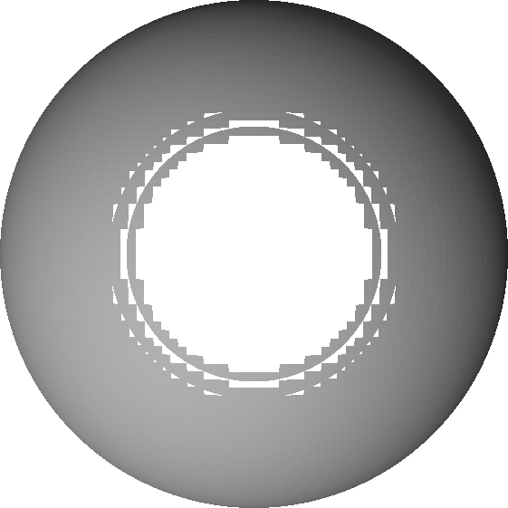

# Lipschitz continuity and sphere tracing
(written by Nenad Markuš in April 2020)
A function $f:D\rightarrow \mathbb{R}$ (with $D$ a subset of $\mathbb{R}^n$) is called **Lipschitz continuous** if there exists a constant $\lambda \geq 0$ such that for all $\mathbf{x}, \mathbf{y}\in D$ the following inequality holds:
$$
|f(\mathbf{x}) - f(\mathbf{y})| \leq \lambda ||\mathbf{x} - \mathbf{y}||
$$
Let us denote smallest such $\lambda$ as $\lambda^\*$ and call it the **Lipschitz constant**.
## Importance for sphere tracing
As explained by J. C. Hart, sphere tracing requires Lipschitz continuity to work correctly.
Morever, the associated $\lambda^\*$ has to be smaller than or equal to $1$.
If this is not the case, we cannot take $f(\mathbf{x})$ as the step size along the ray without the risk to "overshoot" the surface.
To see this, recall that $f\_S$ is a signed distance bound of $S$ if and only if for all $\mathbf{x}\in\mathbb{R}^3$ we have
$$
|f\_S(\mathbf{x})|\leq
\min\_{\mathbf{y}\in f\_S^{-1}(0)}||\mathbf{x} - \mathbf{y}||\_2
$$
where $f\_S^{-1}(0)=\\{\mathbf{z}: f\_S(\mathbf{z})=0\\}$.
If we assume that $f\_S$ is Lipschitz continuous with Lipschitz constant $\lambda^\*$, then for any point $\mathbf{x}$ and $\mathbf{z}$ such that
$$
||\mathbf{x} - \mathbf{z}||\_2=
\min\_{\mathbf{y}\in f\_S^{-1}(0)}||\mathbf{x} - \mathbf{y}||\_2
$$
we have
$$
|f(\mathbf{x})|\leq
\lambda^\*||\mathbf{x} - \mathbf{z}||\_2=
\lambda^\*\min\_{\mathbf{y}\in f\_S^{-1}(0)}||\mathbf{x} - \mathbf{y}||\_2
$$
Thus, to mitigate overestimating the distance, in which case sphere tracing can "overshoot" the surface and penetrate the shape, we must have $\lambda^\*\leq 1$.
This is a **sufficient condition** to avoid the mentioned problem.
If $\lambda^\*$ is greater than $1$, we can replace $f\_S$ by $f\_S/\lambda^\*$.
The resulting function has an optimal Lipschitz constant, $1$.
In the context of the [Femto CAD tool](https://femtocad.gitlab.io), we can get holes in the generated mesh if $\lambda^\* > 1$.
This is demonstrated in the next section.
## An illustrative example
Let us consider a shape defined by a implicit function $F(x, y, z) = x^2 + y^2 + z^2 - 4 = 0$.
It is not hard to see that this is a sphere of radius $2$ centered at the origin.
The function $F$ is not Lipschitz continuous on $\mathbb{R}^3$ since it's derivative is not bounded (more on that later).
However, if we constrain ourselves to a region $[-2, +2]^3$, then we can construct a signed distance bound $f(x, y, z)=F(x, y, z)/\lambda$ for $\lambda=4$.
The following snippet is an implementation of $f$ for [https://femtocad.gitlab.io](https://femtocad.gitlab.io):
```
return function (x, y, z) {
const r = 2;
const lam = 4;
return (x*x + y*y + z*z - r*r)/lam;
};
```
Setting `size=4` and `resolution=100` produces the following mesh:

The above representation looks as expected.
However, if we change $\lambda$ from $4$ to $3$ (set `lam=3` in the code snippet), we get holes in the model (some triangles are missing):

This is due to sphere tracing occasionally "missing" the surface of the shape and immediately "jumping" in its interior.
A consequence of overestimating some distances because of wrong $\lambda$.
## Useful properties related to Lipschitz continuity
We assume that $f$ and $g$ are Lipschitz continuous with associated constants $\lambda\_f$ and $\lambda\_g$, respectively.
1. The sum $f+g$ is Lipschitz continuous:
$$
|f(x)+g(x) - (f(y)+g(y))| \leq
|f(x) - f(y)| + |g(x) - g(y)| \leq
\lambda\_f|x - y| + \lambda\_g|x - y|=
(\lambda\_f + \lambda\_g)|x - y|
$$
2. If $|f|$ and $|g|$ are bounded by some constant $M$, then the product $fg$ is Lipschitz continuous:
$$
|f(x)g(x) - f(y)g(y)|\leq
|f(x)g(x) - f(x)g(y)| + |f(x)g(y) - f(y)g(y)|\leq
M\cdot( |g(x) - g(y)| + |f(x) - f(y)| )
$$
3. A continuous and differentiable function $f$ is Lipschitz if and only if its derivative $f'$ is bounded.
To prove the first implication, we assume that $f$ is Lipschitz continuos and work with the definition of the derivative:
$$
|f'(x)|=
\lim\_{h\rightarrow0}\left|
\frac{f(x+h) - f(x)}{h}
\right|\leq
\lim\_{h\rightarrow0}\lambda\_f\left|
\frac{x+h - x}{h}
\right|=
\lambda\_f
$$
The other implication follows from the [mean value theorem](https://en.wikipedia.org/wiki/Mean_value_theorem).
There exists $c$ between $x$ and $y$ such that
$$
|f(x) - f(y)|\leq
|f'(c)|\cdot|x - y|
$$
If we assume that $|f'(c)|\leq M$, then it follows that $f$ is Lipschitz continuous.
4. The composition $f\circ g$ is Lipschitz continuous:
$$
|f(g(x)) - f(g(y))|\leq
\lambda\_f|g(x) - g(y)|\leq
\lambda\_f\lambda\_g|x - y|
$$
## Resources
* J. C. Hart. Sphere tracing: A geometric method for the antialiased ray tracing of implicit surfaces. The Visual Computer, 1994.
* [https://en.wikipedia.org/wiki/Lipschitz_continuity](https://en.wikipedia.org/wiki/Lipschitz_continuity)
* [https://math.stackexchange.com/questions/2823582/sum-of-lipschitz-functions](https://math.stackexchange.com/questions/2823582/sum-of-lipschitz-functions)
* [https://math.stackexchange.com/questions/1028974/sum-and-product-of-lipschitz-functions](https://math.stackexchange.com/questions/1028974/sum-and-product-of-lipschitz-functions)
* [https://math.stackexchange.com/questions/1165431/is-a-function-lipschitz-if-and-only-if-its-derivative-is-bounded](https://math.stackexchange.com/questions/1165431/is-a-function-lipschitz-if-and-only-if-its-derivative-is-bounded)